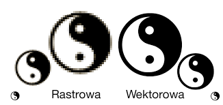
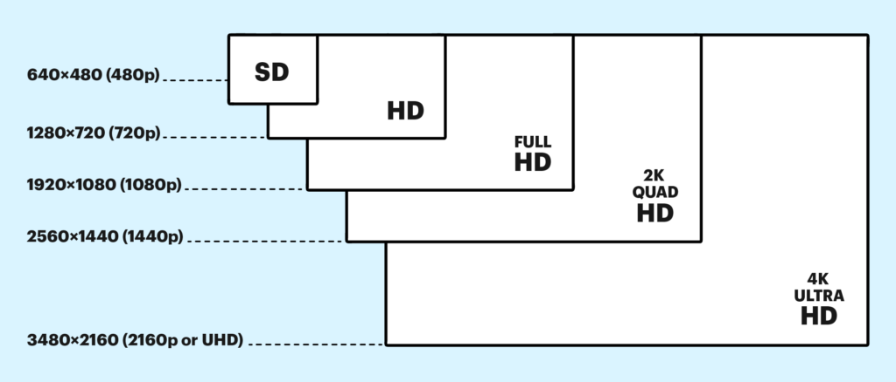
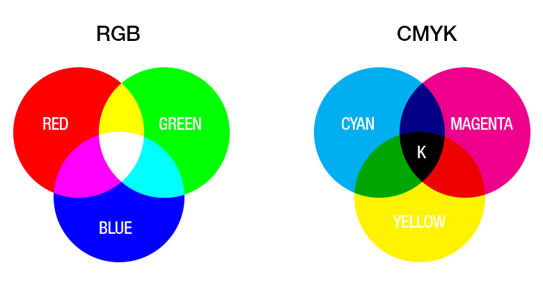
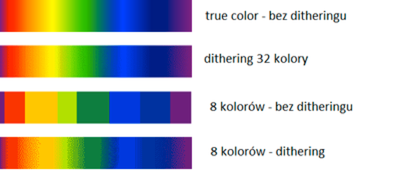
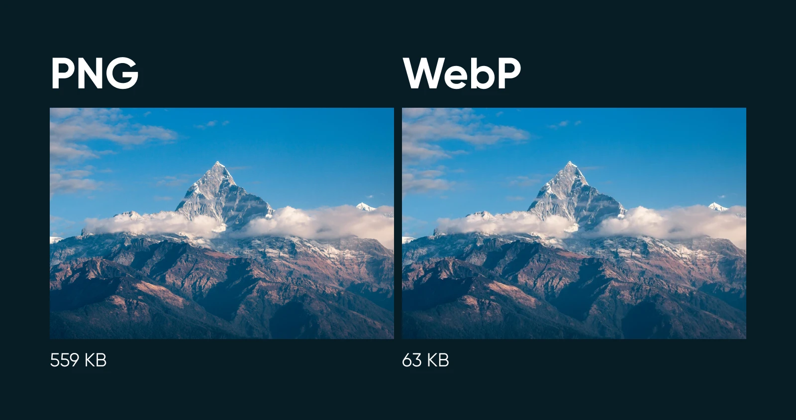

Podstawowe zagadnienia
Grafika komputerowa to dziedzina informatyki, która zajmuje się tworzeniem i obrabianiem obrazów przy użyciu komputera. Dzięki niej możemy projektować plakaty, loga, gry, animacje czy strony internetowe.
Wyróżniamy dwa główne typy grafiki: rastrową (opartą na pikselach, np. zdjęcia) oraz wektorową (opartą na kształtach i liniach, np. logotypy). Grafika komputerowa to też podstawa tworzenia grafiki 3D i efektów specjalnych w filmach.
Rozdzielczość
Rozdzielczość to liczba pikseli (małych punktów) w obrazie. Im więcej pikseli, tym obraz jest dokładniejszy i ostrzejszy. Na przykład: obraz w rozdzielczości 1920x1080 ma 1920 pikseli szerokości i 1080 wysokości.
Wysoka rozdzielczość jest ważna np. w grach, filmach HD, projektowaniu graficznym oraz podczas drukowania zdjęć. Niska rozdzielczość może powodować, że obraz będzie "rozmazany" lub niewyraźny.
Palety kolorów
Paleta kolorów to zestaw kolorów, z których możemy korzystać podczas pracy z grafiką. Najczęściej używa się trzech modeli:
- RGB – do wyświetlania na ekranie (czerwony, zielony, niebieski),
- CMYK – do druku (cyjan, magenta, żółty, czarny),
- HSL – model oparty na odcieniu, nasyceniu i jasności.
Dobrze dobrana paleta kolorów sprawia, że grafika jest czytelna i estetyczna.
Głębia kolorów
Głębia kolorów to ilość informacji, jaką komputer zapisuje o kolorze jednego piksela. Im większa głębia, tym więcej kolorów może być pokazanych na ekranie.
- 1-bit – tylko 2 kolory (czarny i biały),
- 8-bit – 256 kolorów,
- 24-bit – ponad 16 milionów kolorów.
Dzięki dużej głębi kolorów obrazy wyglądają naturalniej i bardziej realistycznie.
Kompresja (WebP i inne formaty)
Kompresja obrazu to sposób na zmniejszenie rozmiaru pliku graficznego. Dzięki temu obraz szybciej się ładuje np. na stronie internetowej. Dzielimy ją na dwa typy:
- Bezstratna – nie traci jakości (np. PNG),
- Stratna – trochę traci na jakości, ale plik jest dużo mniejszy (np. JPG, WebP).
WebP to nowoczesny format stworzony przez Google. Jest lekki, szybki i obsługuje przezroczystość jak PNG oraz kompresję jak JPG – dlatego świetnie nadaje się do internetu.
Porównanie formatów graficznych
| Format | Typ kompresji | Przezroczystość | Zastosowanie |
|---|---|---|---|
| JPG | Stratna | Nie | Zdjęcia, strony internetowe |
| PNG | Bezstratna | Tak | Grafiki z przezroczystością |
| GIF | Bezstratna | Tak | Proste animacje |
| WebP | Stratna/Bezstratna | Tak | Nowoczesne strony WWW |
Ciekawostki
- Pierwszy program graficzny na PC to Paint, który powstał w latach 80.
- Grafika 3D używana w grach wykorzystuje te same techniki co filmy animowane, np. Pixar.
- Popularne oprogramowanie graficzne to m.in. Adobe Photoshop, GIMP, Inkscape, Blender.
- GIF może mieć tylko 256 kolorów, dlatego nie nadaje się do zdjęć, ale świetnie działa w animacjach.
- Wirtualna rzeczywistość (VR) i rozszerzona rzeczywistość (AR) opierają się na grafice komputerowej w czasie rzeczywistym.